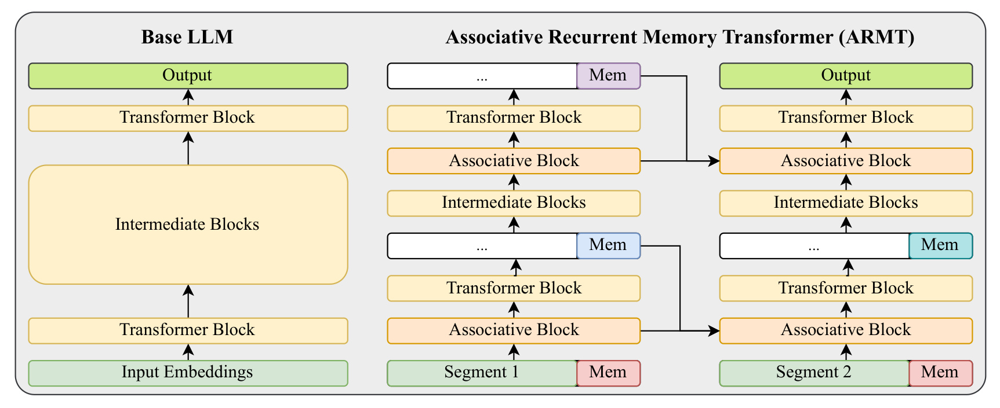
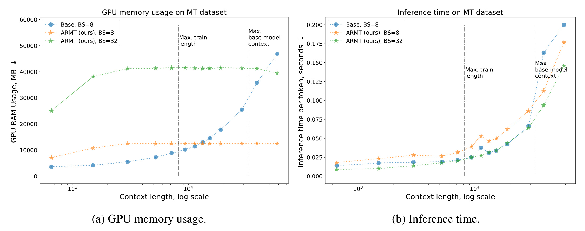
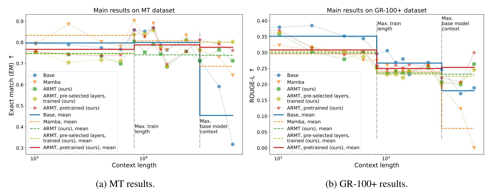
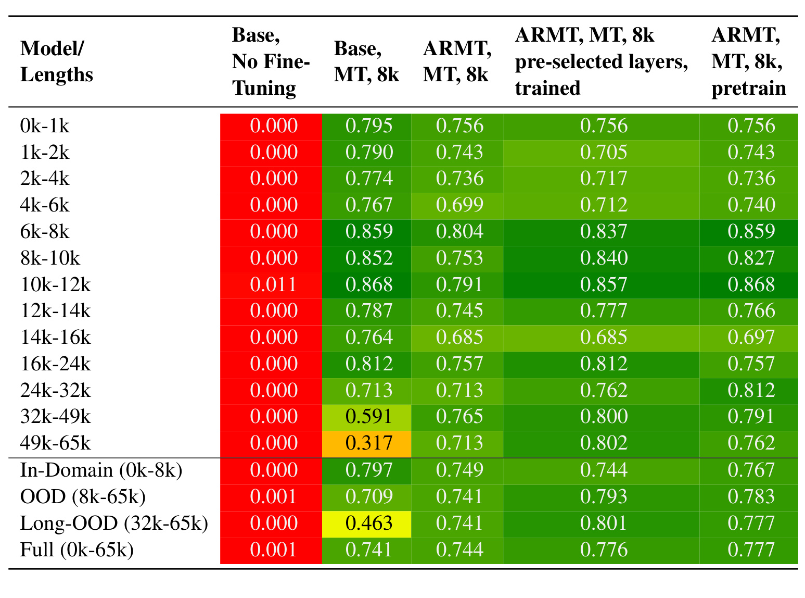
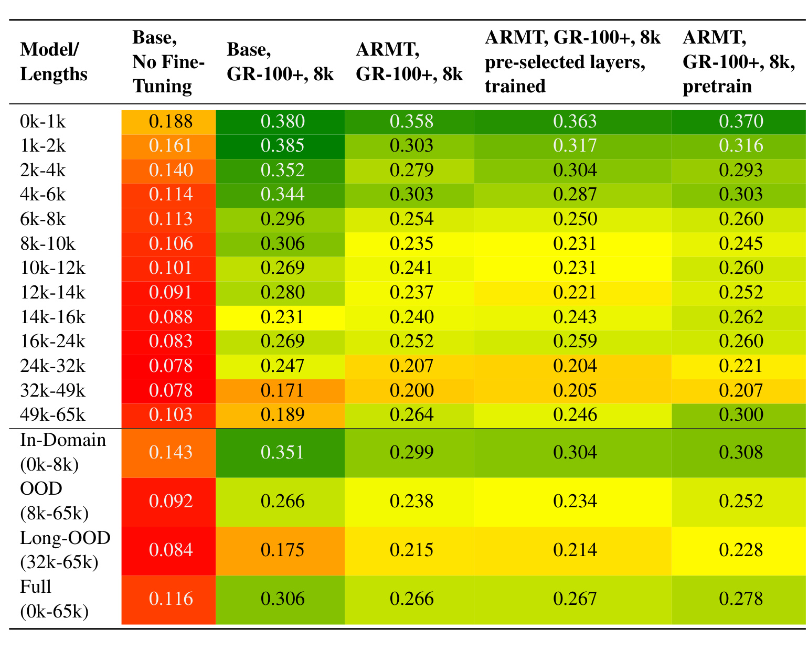
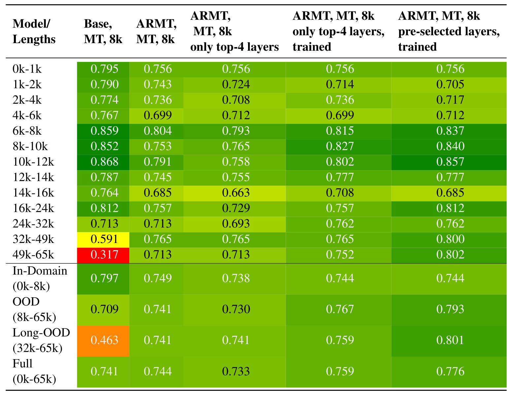
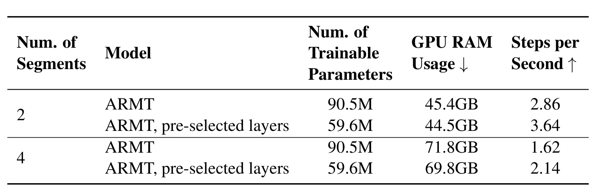

Extending LLM Context via Associative Recurrent Memory / 用关联循环记忆扩展大模型上下文
这篇论文研究怎样把已经预训练好的 Transformer 大模型改造成可处理远超原生窗口的分段循环模型。第一作者 Gleb Kuzmin 的主要机构是 FusionBrain Lab 与 RUDN，合作机构包括 MBZUAI、Cognitive AI Systems Lab、MIRAI、莫斯科国立大学、普林斯顿高等研究院和魏茨曼科学研究院等。论文入口为 arXiv:2607.11614。截至本次精读，摘要页与论文正文没有给出可与本文一一对应核验的独立代码或项目页，因此复现判断只能依据论文中的算法、训练配方和超参数。
现有预训练 Transformer 难以用可接受的计算与显存处理几十万乃至百万 token，而高效循环模型往往不能直接继承成熟 LLM 的能力；关键缺口是，在不从头训练的前提下，把现有 LLM 改造成显存不随总上下文增长、同时仍保留段内全注意力能力的长上下文模型。
1. 背景和问题
长上下文并不是单纯把位置编码外推到更大的数字。技术报告、代码仓库、多文档科学推理和法律材料中，答案常依赖分散在数万乃至数十万 token 里的线索。标准全注意力在长度为 (T) 时需要构造随 (T^2) 增长的注意力交互，即使采用节省中间激活的实现，KV 缓存和推理显存仍至少随总长度线性增长。更棘手的是，模型的“标称窗口”也不等于“有效窗口”：信息落在远处或中间位置时，准确率可能在达到硬上限以前就下降。因此，直接扩大窗口同时遇到训练成本、服务显存与长度泛化三个问题。
已有路线各自解决了一部分。稀疏注意力和线性注意力降低交互数量，但常改变预训练时学到的归纳偏置；Mamba、RWKV、xLSTM 等循环或状态空间模型按 token 更新固定状态，长度复杂度友好，却通常要求从头训练，而且在精确复制、指令遵循和复杂上下文推理上未必保留 Transformer 的优势。混合模型在部分层交错注意力与循环结构，能减轻能力差距，但若全局注意力仍覆盖整个序列，昂贵的长度平方项没有真正消失。另一类 segment-level recurrence 把输入切成块，在块内做完整注意力、块间传递固定状态，提供了兼容现有骨干的折中点。
ARMT 的前身已经证明关联记忆能在极长合成任务上工作，但此前规模不足 2 亿参数，任务也较窄。本论文真正要回答的不是“记忆模块能不能跑”，而是四个更接近部署的问题。第一，给 Gemma-3-1B-IT、SmolLM-2-360M-IT 这类现成模型插入未初始化的记忆参数后，怎样训练才不会破坏原有能力？第二，只训练到 8k 的分段输入，能否泛化到 32-65k，而非依靠位置插值勉强接受更长张量？第三，固定状态是否会成为信息瓶颈，使长文问答或代码类型预测随片段数增加而退化？第四，循环处理会增加串行深度，理论 FLOPs、显存和真实 token 时间是否能同时改善？
论文为此构造两个领域长上下文任务。ManyTypes-long（MT）从互不重叠的 Python 仓库拼接代码，目标是预测变量类型，最长 64k，使用 exact match，因为答案短且要求精确。GovReport-long（GR）从政府报告问答数据取含答案的真实段落，并按原顺序混入无关段落；训练集再加入合成问答，形成 GR-100+，最长同样达到 64k，使用 ROUGE-L。两者都把问题放在上下文之前，目的是减少模型只凭参数记忆猜答案的机会，也迫使记忆机制在读后续片段时保留任务条件。
这一实验设计的价值在于把“长上下文”落实为窄领域微调：企业通常不是重训通用基础模型，而是让本地小模型读取长代码、合同或报告。它也带来清晰边界：MT 和 GR 只覆盖代码类型预测与文档问答，不能代表开放式多跳推理、长对话、多模态或检索增强生成；而且合成 GR 数据的质量、长度分布和生成模型偏差都会进入最终结果。后文解读时必须把“在两类任务上成功外推”与“通用地理解任意长上下文”严格区分。
这还解释了论文为何同时保留 Base 与 Mamba-2 两种对照。Base 回答“同一个预训练 Transformer 在任务微调后，分段记忆是否值得替换原生全注意力”；Mamba-2 回答“若允许使用从头训练的线性循环骨干，ARMT 是否仍有价值”。前者强调继承权重和窗口内能力，后者强调长度复杂度。若 ARMT 只胜过被硬截断的 Base，却不如同规模循环模型，贡献会更像工程补丁；若只胜过 Mamba，却明显破坏 Base 的短上下文表现，也无法说明兼容预训练能力。因而论文把 0-8k、8-65k、32-65k 分开汇总，而不是只报一个全局平均分。
“常数记忆”同样需要准确理解。ARMT 的关联状态大小不随已读片段数增加，但每层、每个 batch 样本仍各有状态，memory token 数、关联维度、被增强层数都会改变常数项；处理更多片段也会线性增加计算时间。它解决的是历史 KV 持续累积，不是让任意长输入免费。对于报告问答，固定状态还必须在大量无关段落中保存与开头问题相关的线索；对于 MT，它要跨文件保持变量和类型信息。两项任务分别测试自由文本干扰与精确符号检索，恰好对应关联记忆可能成功和可能失真的两种压力。
从推荐系统角度看，这个问题与超长用户行为序列相似：全量注意力把所有曝光、点击和会话两两交互，成本随历史膨胀；固定用户向量又容易丢失稀有但关键兴趣。ARMT 的启发在于先在局部会话内做高分辨率建模，再把可寻址关联写入长期状态。不过论文并未评估时间衰减、负反馈、兴趣冲突或线上增量更新，所以这里只能把它视为一种可验证的状态设计候选，不能把 MT/GR 的长度外推直接等同于推荐收益。
2. 方法
2.1 分段全注意力与层级关联记忆
ARMT 不替换骨干 Transformer，而是把输入切成不重叠的固定长度片段，并在每个片段前后附加可训练 memory token。片段内部仍运行原模型的完整自注意力，所以短距离语法、局部复制和指令模式继续使用预训练能力；跨片段只传递每层的关联矩阵与归一化状态，状态大小不随已经读过的片段数增长。核心结构选择是把“高保真局部计算”与“定容量长期状态”分开：总长度增加时重复执行同一段内 Transformer，而不是扩大一次注意力的宽度。

Figure 1 左侧是普通骨干：输入嵌入经过若干 Transformer block 直接得到输出。右侧把 Segment 1 与 Segment 2 串联，每个被选中的层都在 Transformer block 后增加 Associative Block；彩色 Mem token 随片段进入层内计算，关联块把上一片段写成固定状态，再向下一片段提供检索结果。图中的横向箭头不是把全部历史 hidden states 复制过去，而是传递关联状态，这正是显存不随片段数增加的来源。与此同时，每个片段仍穿过完整深度，所以模型对更长输入的计算深度随片段数增长，这与一次性并行处理全序列不同。
在第 s 个片段、第 l 层，先让当前片段隐状态与 memory token 一起通过原 Transformer 层，得到用于压缩本段信息的记忆表示。此处的关键不是额外做一次池化，而是让记忆 token 参与同一层注意力，因而能够按当前问题和局部上下文选择要带到下一片段的信息；普通 token 继续服务当前片段输出，记忆 token 则承担跨片段接口：
$$ M_s^l = \operatorname{TransLayer}\left(H_s^{l-1}, M_s^{l-1}\right). $$符号解释：(H_s^{l-1}) 是当前片段进入第 (l) 层前的普通 token 表示，(M_s^{l-1}) 是同层入口的 memory token，(M_s^l) 是层输出中的记忆部分。这个式子说明信息提取仍由预训练 Transformer 完成，关联模块不直接压缩原始文本，而是压缩已经被该层表征过的内容。
随后每个记忆向量 m_i 被投影为键、值和写入门。键负责回答“以后应由什么查询找回这条信息”，值保存要传递的内容，门则决定是否值得覆盖关联状态；三者分开，使 ARMT 不必把整个片段无差别压进固定矩阵，而能学习选择性写入。这也为不同层学习不同粒度的长期关联留下了空间：
$$ k_i=W_Km_i,\qquad v_i=W_Vm_i,\qquad \beta_i=\sigma\left(W_\beta m_i\right). $$符号解释：k_i 是内容寻址键，v_i 是待写入值，β_i 控制这条关联写入多少；W_K、W_V、W_β 是可学习投影。门值接近零时，该 memory token 几乎不改变长期状态；门值较大时，残差信息会进入关联矩阵。写入前，模型先用上一片段的矩阵 A_{s-1}^l 查询该键已有的值，并计算新颖度，这一步把“重复事实”与“新增事实”区分开：
$$ \bar v_i= \frac{A_{s-1}^l\phi(k_i)} {(z_{s-1}^l)^\top\phi(k_i)},\qquad \gamma_i=1- \frac{(z_{s-1}^l)^\top\phi(k_i)} {\lVert\phi(k_i)\rVert_2^2}. $$符号解释：φ 是把键映射到关联特征空间的函数，z_{s-1}^l 是归一化累计量，v̄_i 是旧记忆对当前键的预测，γ_i 衡量该键相对已有状态的新增程度。若旧状态已能预测 v_i，后续更新只需写入残差；若键很新，归一化状态增加更多。分母同时防止高频键仅凭出现次数主导读出。固定容量并不等于无损存储：大量相似键、冲突关联或跨很多片段反复覆盖时，残差写入仍可能产生干扰。
关联矩阵采用带门控的 delta-rule 更新，归一化状态同步累积。它不是把新值直接加到旧矩阵，而是加入“真实值减旧预测”的外积残差；因此同一关联被多次观察时更新趋小，旧预测错误时才进行较大修正。这个规则把有限状态的容量优先用在模型尚未记住的对应关系上：
$$ A_s^l=A_{s-1}^l+ \sum_i\beta_i\left(v_i-\bar v_i\right)\otimes\phi(k_i), $$ $$ z_s^l=z_{s-1}^l+\sum_i\gamma_i\phi(k_i). $$符号解释：⊗ 表示外积，A_s^l 是读完当前片段后的关联矩阵，残差 v_i-v̄_i 防止重复写入已有内容；z_s^l 用于下一次查询归一化。该状态的形状由关联维度决定，与此前已经处理多少片段无关，但每经过一段都会原位更新。到第 s+1 个片段，每个普通表示 x_j 产生查询，并从固定状态读出跨段关联：
$$ q_j=W_Qx_j,\qquad y_j=\frac{A_s^l\phi(q_j)} {(z_s^l)^\top\phi(q_j)}. $$符号解释：q_j 是当前 token 的查询，y_j 是从此前所有片段压缩状态中取回的值，分母用累计状态 z_s^l 校正不同键的权重。读出结果在关联块中注入当前层，使后续 Transformer block 可以把远程证据与本段 token 联合处理。训练与推理都执行相同递归；差别只在训练可跨多个片段反向传播并学习投影、门控和骨干适配参数，推理则按片段顺序持续更新状态。
分段还改变注意力成本。若总长度为 T、片段长为 S、全局注意力层数为 N_g、头数为 H、头维为 d_h，标准模型让每个全局层在 T 个位置间建立完整交互；ARMT 则执行 T/S 次、每次仅覆盖 S 加少量 memory token 的注意力。忽略 memory token 的小常数开销时，可得到：
$$ F_{\mathrm{ARMT\_Attn}}\approx4N_gHd_hST,\qquad \frac{F_{\mathrm{Gemma\_Attn}}}{F_{\mathrm{ARMT\_Attn}}} \approx\frac{T}{S}. $$符号解释：全注意力的 T² 被“片段数 T/S 乘每段 S²”替代。T=32768、S=1024 时，全局注意力部分理论上减少 32 倍。这个比值只描述被分段的全局注意力层，若骨干含局部滑窗层，或 memory token 数接近段长，实际比例会不同。更重要的是，前馈和投影仍线性扫描全部 token，论文用粗略核算得到总比值：
$$ \frac{F_{\mathrm{ARMT}}}{F_{\mathrm{Gemma}}} \approx \frac{2N_gHd_hS+15Nd^2} {2N_gHd_hT+15Nd^2} \approx0.67. $$符号解释：N 是总层数，d 是隐藏维；分子分母中的 15Nd² 对应两种模型都要承担的稠密层成本，且近似忽略了关联块、memory token 和实现调度的附加计算。因此“注意力 32 倍”不能写成“整模型 32 倍”，论文主张的是在该 Gemma 配置与核算假设下总 FLOPs 少约三分之一，真实速度还要结合 batch 和 kernel 测量。
2.2 从未初始化记忆到可训练长上下文能力
给预训练 LLM 插入 Associative Block 会引入从未训练的 W_K、W_V、W_Q、W_β 和关联状态路径，直接在困难长样本上微调时，初始模型接近随机，跨段样本提供的梯度很弱。论文先用 19B FineWeb-Edu token 继续语言模型预训练 Gemma-ARMT，每个序列 8192 token，分成 8 个 1024-token 片段；该阶段同时更新 Gemma 与 ARMT 参数，使用 8×H100-80GB 约 100 小时。它的功能不是扩大位置编码，而是让新记忆路径先学会在通用文本上写入和读取。
任务微调再采用长度课程：先训练 2 段，再到 4 段和 8 段，同时逐阶段降低学习率。对于没有继续预训练的 ARMT，这个由易到难的顺序很重要，因为模型先在短跨距上学到可用关联，再承担更远传播；对于已经完成 19B token 预训练的模型，附录显示取消课程仍可得到相近结果，说明两种策略在“初始化记忆路径”上部分替代，而不是简单叠加必然增益。
长样本不足时，作者从长文档抽取多个短段落，用多个不同模型族的 LLM 为各段生成问答，再把段落拼成长上下文，保留原 QA 监督。GR-100+ 的最佳合成/真实比约 5.5，继续增加后收益饱和。这里的因果链是：长度可控的合成样本填满 2、4、8 段课程桶；多生成模型降低单一教师偏差；但用有限长度合成 QA 做“监督预训练”反而损伤长距离泛化，论文推测原因正是它把记忆适配到较短的合成分布。可见数据配方必须区分通用语言模型继续预训练与任务型合成监督。
2.3 关联层裁剪与预选择
全层插入关联模块并非必要。作者先训练完整 ARMT，再逐层把关联块替换为恒等映射，发现 Gemma 的重要层集中在网络第三个四分位，特别是 13-18 层，layer 14 在两任务中反复出现；0-6 层贡献最小。解释是低层尚未形成足够抽象的语义键，高层已接近输出 token，最适合长期关联的表示落在中上层。这个解释来自消融相关性而非机制证明，不能据此断言所有骨干都有相同层位。
后训练裁剪仍要求先训练全模型，所以论文提出无需预先测重要性的通用选择：26 层 Gemma 取 7、13、14、19、25 层，覆盖中间两层、最终层以及前后四分位各一层。微调和推理都只在这些层保留关联块，从源头减少参数和递归模块调用。SmolLM 使用约 20% 层也保持趋势，但其低层比 Gemma 更重要，说明“层数比例可迁移”强于“具体层号可迁移”。对新骨干，合理做法是先把五层启发式当起点，再用小规模逐层探针验证，而不是硬编码 Gemma 层号。
3. 实验结果
3.1 设置、比较对象与评价口径
主实验以 Gemma-3-1B-IT 和 SmolLM-2-360M-IT 为骨干，把 ARMT 段长固定为 1024；训练最多 8 段，即 8k，却评估到 65k。对照包括未微调与任务微调的全注意力 Base、约 1.3B 参数的 Mamba-2、完整 ARMT、只保留少量关联层的 ARMT，以及先继续预训练再任务微调的 ARMT。MT 用 EM，GR/GR-100+ 用 ROUGE-L。论文把 0-8k 定义为 In-Domain，8-65k 为 OOD，32-65k 为 Long-OOD；其中 32k 也是 Gemma 标称窗口边界，因此 Long-OOD 同时测试训练长度外推和原生窗口外行为。
训练使用 LoRA 作用于全部线性层，rank 64、alpha 128、dropout 0.1，梯度裁剪 1.0、weight decay 0.01；基础 ARMT 使用 16 个 memory token、关联记忆大小 64。这个设置让比较接近有限算力领域微调，但也意味着结果依赖 LoRA 容量、1024 段长和固定记忆大小。表 34-35 还显示 32 个 memory token 并未优于 16 个，容量增加不是单调收益。
3.2 显存、FLOPs 与真实推理时间

Figure 2 左图的蓝线是 batch 8 的全注意力 Base，显存随长度上升，32k 左右约 40GB，继续增加后接近 47GB；橙线 ARMT batch 8 约稳定在 12GB，绿线 batch 32 也基本保持约 40GB。这里“常数显存”指总上下文增加时不保存全部历史 KV，而不是绝对显存很小：扩大 batch 仍会成比例提高显存。右图揭示循环模型的另一面：batch 8 时 ARMT 因逐段串行与 GPU 利用不足反而慢于 Base；batch 32 充分并行多个样本后，绿线才在长序列上体现优势。论文因而证明了可扩展性，却没有证明任何 batch 和服务负载下都低延迟。
理论 FLOPs 与墙钟时间也不能混为一谈。段内注意力把全局注意力项降低约 (T/S)，但前馈层不变，论文估算 32k 时总 FLOPs 约为 Base 的 0.67。真实曲线还受 kernel、循环调度、batch、显存带宽和 GPU 饱和度影响。对在线系统，这意味着 ARMT 更适合长文档离线解析、批处理或并发较高的窄领域服务；低并发、首 token 延迟敏感场景必须另测，并可能需要论文引用的 diagonal batching 等并行实现。
3.3 长度泛化的主结果

Figure 3 左图中，训练到 8k 的 Base 在 32k 前维持较高 MT EM，超过原生窗口后迅速下降，49-65k 点接近 0.32；Mamba-2 也在极长处下降。完整 ARMT、五层预选择 ARMT 和继续预训练 ARMT 的均值阶梯在 32k 后仍约 0.74-0.80。右图的 GR-100+ 更难，所有模型随长度增加都下降，但 Base 在 Long-OOD 约 0.175，ARMT 系列保持在 0.214-0.228，且继续预训练变体在 49-65k 单桶达到 0.300。两条竖线分别标出 8k 最大训练长度和 32k Gemma 原生窗口，ARMT 的关键证据正是跨过两条边界后没有同步崩落；各长度桶仍有波动，说明数据难度并非均匀。曲线支持的是“退化更慢、外推更好”，并非所有长度绝对不降，也不能证明超过 65k 后仍能维持。

Table 1 让权衡更明确。任务微调 Base 的 In-Domain EM 为 0.797，完整 ARMT 为 0.749，说明分段和固定状态在短上下文上付出 0.048；但 Long-OOD 从 Base 的 0.463 提高到完整 ARMT 的 0.741，五层预选择达到 0.801，继续预训练 ARMT 为 0.777。Full 指标上 Base 0.741、完整 ARMT 0.744，差距很小，而预选择与预训练均约 0.776-0.777。逐桶看，Base 从 24-32k 的 0.713 降至 49-65k 的 0.317，完整 ARMT 同期仍为 0.713，预选择反而从 0.762 升到 0.802；这比单看 Full 更能定位收益来源。也就是说，论文的优势主要来自把极长区间从崩落拉回，而不是在所有区间统一抬高分数。

Table 2 显示同一机制在生成式报告问答上的收益更温和。微调 Base 的 In-Domain ROUGE-L 为 0.351，完整 ARMT 为 0.299，Full 也从 0.306 降到 0.266；但 Long-OOD 从 0.175 提升到 0.215，继续预训练后到 0.228，49-65k 单桶从 0.189 提升到 0.300。预选择层在 GR 上 Long-OOD 为 0.214，没有像 MT 那样超过完整 ARMT。这个任务差异很重要：固定关联状态更适合保存可精确寻址的代码线索，面对自由文本答案、段落干扰和摘要式生成时，局部能力损失更难完全补回。
作者还在 SmolLM-2-360M、ContractNLI 和 BABILong 上报告一致方向：SmolLM Base 超过 8k 原生窗口后退化，ARMT 更稳定；ContractNLI 与 BABILong 上经过论文配方的 ARMT 优于 Base。更多基线表显示 ARMT 的长度泛化优于 Mamba、DeltaNet、xLSTM，并优于只传递 memory token 而没有关联矩阵的 RMT。由于这些证据多在附录，且模型规模仍不超过 1B，它们应视为跨任务支持，而不是大规模通用 LLM 的最终结论。
3.4 训练配方与关联层消融
继续预训练、课程学习和合成数据的作用并不完全相同。没有继续预训练时，课程学习对新插入的记忆模块很关键；完成 19B token 继续预训练后，无课程变体可接近课程结果。GR 合成数据增加到 GR-100+ 持续改善，超过约 5.5 的合成/真实比后饱和。相反，使用较短合成 QA 做监督预训练会改善域内却削弱长度外推。这组结果提示，训练数据的“长”不只看 token 数，还要看监督线索是否迫使模型跨足够多片段读写记忆。

Table 3 比较全层 ARMT、训练后仅保留 top-4、只训练 top-4，以及训练五个预选择层。完整 ARMT 的 MT Long-OOD 为 0.741；不再训练而只保留 top-4 仍为 0.741；训练 top-4 达到 0.759；五层预选择达到 0.801。域内结果则从 Base 0.797 降到 0.738-0.749。五层预选择在 OOD 汇总达到 0.793、Full 达到 0.776，但 0-2k 两桶反而低于完整 ARMT，说明层稀疏化优化的是跨段传播而非所有长度。表格说明大量关联层是冗余的，也说明作用高度集中；但“预选择最好”可能同时包含正则化、参数量和优化路径差异，不能只归因于找到正确层位，且 GR 上并没有同等幅度的优势。

Table 4 把这一结构结论落到训练成本。完整 ARMT 有 90.5M 可训练参数，五层预选择为 59.6M，减少约 34%。2 段训练时 steps/s 从 2.86 提升到 3.64，约增 27%；4 段从 1.62 到 2.14，约增 32%。显存只从 45.4GB 降到 44.5GB、从 71.8GB 降到 69.8GB，说明主要显存仍由骨干激活和段数控制，少层化更直接改善参数与计算吞吐。作者概括为训练提速约 30%，与表中两种段数一致。
综合来看，实验最有说服力的是同一 8k 训练上限下的长度分桶，而不是单个平均分。ARMT 在 MT 上几乎把 32k 后的 Base 崩落消除，在 GR 上也恢复一部分；代价是短上下文存在可见折损、低 batch 推理未必更快、训练仍需 19B token 继续预训练或精心课程。若部署分布多数请求小于原生窗口，Base 可能更合适；若少量超长请求的失败代价很高，ARMT 才显示更清楚的价值。
4. 总结
ARMT 给出一条兼容预训练 LLM 的长上下文路线：保留段内全注意力，用每层固定大小的关联矩阵跨段写入与检索，再通过继续预训练、长度课程、合成长样本和少层预选择使新路径可训练。它最扎实的结果不是“无限上下文”，而是用 1024-token 片段、最多 8k 训练，在 MT 与 GR-100+ 上外推到 65k，并让推理显存对总长度近似常数。Gemma 的 MT Long-OOD EM 从 0.463 提升到 0.741-0.801，GR Long-OOD ROUGE-L 从 0.175 提升到 0.214-0.228；与此同时，域内分数并非总是优于 Base。
我的判断是，这项工作更像“长文档适配器”而非替代所有 Transformer 的新骨干。它允许企业复用已有小模型权重，按领域数据微调固定状态，适合代码库、合同和报告等可批处理场景。对推荐系统，类似机制可用于把长用户历史按会话或时间窗分段，在段内精细建模、段间维护关联状态；但推荐场景还必须检验兴趣漂移、重复曝光与冲突偏好是否会污染 delta-rule 记忆，不能直接用论文 QA 结果推断线上收益。
主要局限至少有四点。第一，模型只到 1B，无法确认更深、更宽骨干的最佳层位、优化稳定性和通信开销。第二，任务集中在代码类型预测与文档问答，缺少开放式多跳推理、工具调用、多轮对话和多模态证据。第三，固定关联状态有冲突和覆盖风险，论文的层级消融只显示“哪些层重要”，没有解释记忆究竟存了什么。第四，效率结论依赖 batch 与实现：小 batch 下循环串行可能更慢，30% FLOPs 是近似而非端到端能耗测量。第五，GR 依赖合成问答且最佳配比任务特定，教师偏差可能被长上下文放大。第六，未核验到代码，使 DeepSpeed ZeRO-3、状态复位、跨段梯度和数据生成细节难以独立复现。
后续最值得跟进三组实验。其一，在 7B 及以上骨干上比较相同 token 预算下的 ARMT、YaRN/位置插值、稀疏注意力和混合 SSM，并同时报告 TTFT、吞吐、峰值显存与能耗。其二，做记忆可解释性与干扰测试：控制相似键、矛盾事实、时间更新和噪声片段，观察 (A_s^l) 的写入门和检索错误如何累积。其三，跨领域验证层预选择是否可迁移，尤其测试“约 20% 层”与“固定层号”哪个更稳定。其四，为推荐系统构造按真实时间排序的超长行为任务，比较固定关联状态对长期兴趣召回、短期兴趣响应和冷启动的影响，并用线上 shadow 指标确认低 batch 延迟代价。只有这些问题得到回答，ARMT 才能从有前景的领域长上下文配方走向更通用的生产架构。